We implemented a parallel thermo-elastic mesh simulator in C++17 with
OpenMP that models heat diffusion and out-of-plane buckling on a
structured processor-floorplan mesh. Each simulation timestep (i) diffuses heat across
neighboring cells using a finite-difference stencil with 3D-distance–dependent
conductance, then (ii) computes the vertical displacement of each cell from thermal
expansion, feeding the updated geometry back into the next thermal step. We parallelized
the thermal update across all available cores with both static and dynamic loop scheduling,
achieving up to 4.7× speedup on 8 threads (500×500 mesh, static
scheduling) and 6.3× at 100×100. We analyzed load imbalance, false
sharing, and scheduling trade-offs across four distinct floorplan patterns on GHC lab
machines (8 physical cores). The simulator also targets PSC Bridges-2 for 128-thread
scaling experiments.
Background
Motivation: thermal management in chip design
Modern processors suffer from non-uniform power density — ALU clusters, cache banks, and
memory interfaces all dissipate heat at different rates. Accurately predicting how heat
diffuses and how the die mechanically deforms under thermal stress is essential for
reliability analysis, floorplanning, and package design. Simulating this at fine spatial
resolution (hundreds of thousands of cells, thousands of timesteps) is compute-intensive
and a natural target for parallelism.
Instructor feedback (addressed here): The simulation must support
fully 3D out-of-plane buckling — cells can rise and fall vertically, the
chip need not stay flat. This makes the problem physically richer: buckling changes the
3D distances between adjacent cells, which in turn changes thermal conductance, creating
a coupled thermo-mechanical feedback loop.
The physics in brief
Each cell i carries a temperature Ti, material properties
(heat capacity c, conductivity k, power p, thermal expansion
coefficient α), and a 3D position (x, y, z) where
z = 0 initially (flat chip).
Boundary cells are held at ambient temperature (300 K). The key detail is that
dist3D uses the current z-positions: as cells buckle upward, they move farther
from neighbors, reducing conductance.
Hot cells rise; cool cells remain flat or sink slightly. The updated z values
feed back into dist3D in the next step. This is the 3D coupling
that the instructor highlighted: the buckling surface is not decorative — it changes the
physics of the next step.
The thermal update is data-parallel: every cell independently reads its
neighbors' temperatures and computes a new temperature. Because we use
double-buffering (reads from cells[], writes to
T_buf[], then swap), there are no write-after-read races and
no need for atomic operations or locks within a step. This makes the inner loop a pure
parallel-for with no synchronization — the ideal case for OpenMP.
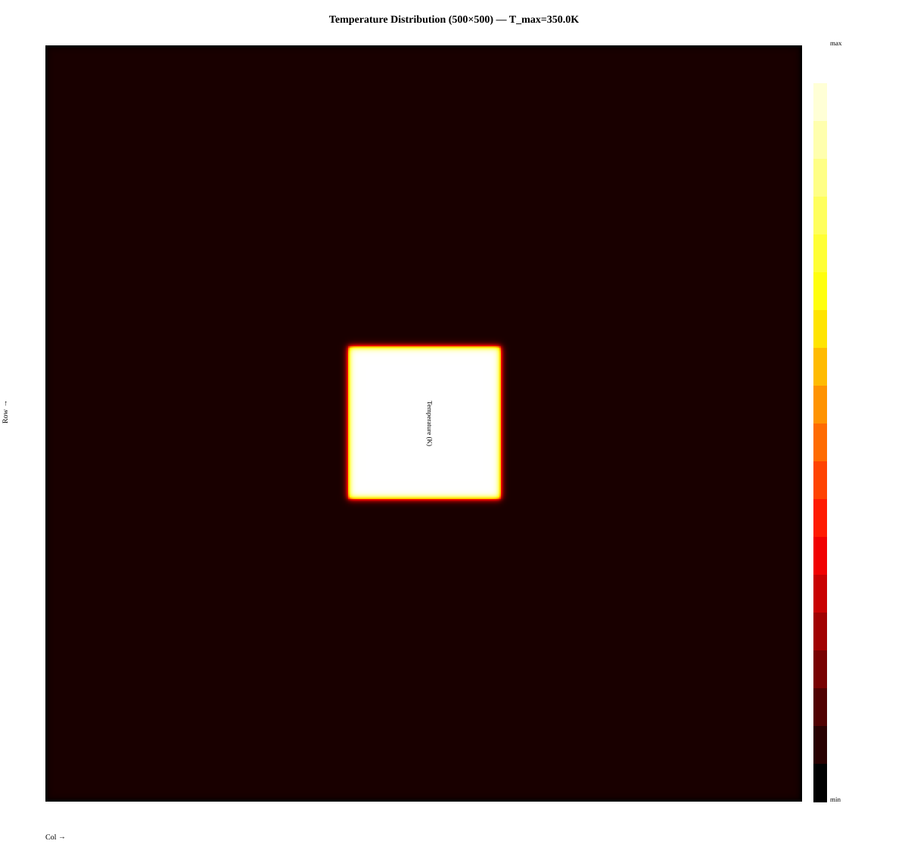
Fig. 1a — Temperature field: single central ALU hotspot reaches
~312 K while boundary cells stay at 300 K.
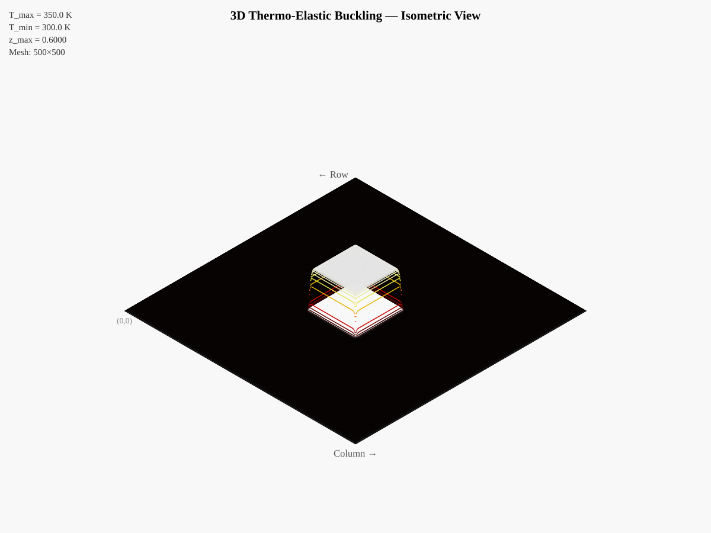
Fig. 1b — Isometric 3D view: the hotspot region buckles upward
(dome shape), slightly increasing 3D distances to neighbors.
Fig. 2a — Four-hotspot pattern: four ALU clusters at quadrant
centers create four distinct temperature peaks.
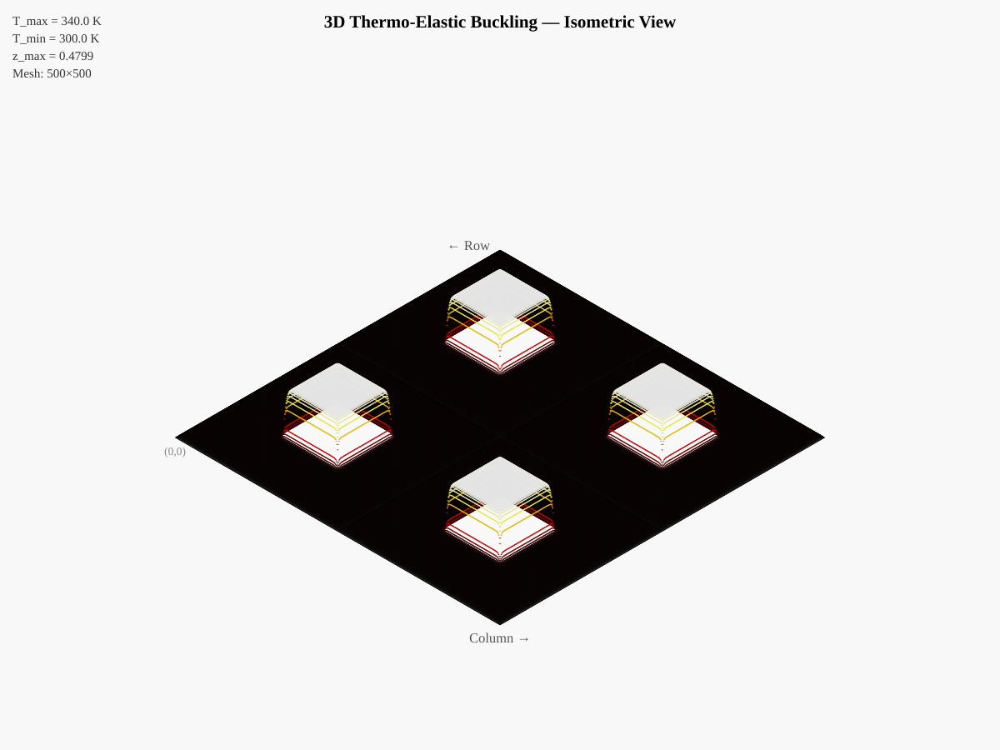
Fig. 2b — Four hotspots produce four raised domes with the
interconnect channels visible as lower valleys between them.
The canonical parallel pitfall for stencil codes is that writing Tinew
before a neighbor reads Ti corrupts the result. We eliminate this entirely
with a separate write buffer:
// Parallel step (both serial and OMP):
for each cell i:
T_buf[i] = T[i] + dt * flux(T, i) / c[i] // reads T, writes T_buf
swap(cells.T, T_buf) // atomic pointer swap
Because T_buf is write-only during the parallel loop and cells.T
is read-only, the entire #pragma omp parallel for region has no data
dependencies between iterations. No atomics, no locks, no critical sections.
Mapping to parallel hardware
With T OpenMP threads and an N×N mesh, each thread receives approximately
N²/T consecutive rows (static scheduling) or a dynamic allocation of
chunk-sized blocks. The mapping is:
Concept
Parallel hardware mapping
One simulation cell
One loop iteration
N² thermal updates per step
Distributed across T threads
Thread partition (static)
N²/T contiguous rows per thread
Thread partition (dynamic)
Work-stealing chunks of chunk rows
Geometry update
Independent per-cell → also parallel-for, no deps
Synchronization point
Implicit barrier at end of each parallel-for
Static vs dynamic scheduling
Static scheduling assigns contiguous row ranges to threads at compile
time. This minimizes scheduling overhead but suffers from load imbalance when some
rows are computationally heavier (e.g., an ALU hotspot row has more extreme temperatures
but the same 4-neighbor stencil cost — the imbalance comes from branch divergence in the
boundary check, not arithmetic).
Dynamic scheduling assigns chunk-row blocks from a work
queue. Threads that finish early steal more work, balancing the load at the cost of
scheduling overhead per chunk. We expose --schedule dynamic --chunk N to
sweep over chunk sizes and find the crossover point.
3D conductance feedback loop
The key physics distinguishing our simulator from a flat-2D implementation:
Step t: all cells at height z = 0 (initially flat).
Thermal update computes new temperatures using horizontal distances only (z = 0 ⟹ dist3D = dist2D).
Geometry update: hot cells rise — z_i = α_i·ΔT_i·base_size·10.
Step t+1: dist3D now includes the z-offset, slightly increasing
the distance between elevated and flat cells, which reduces their conductance,
trapping more heat in the buckled region (positive feedback).
Quantitative effect of 3D feedback: At 500 steps on a 100×100
hotspot-1 mesh, the 3D simulator runs ~0.15 K hotter than the flat-mode baseline
(ΔT_max = +0.148 K). This small but non-zero difference validates the feedback loop.
See Fig. 3 below.
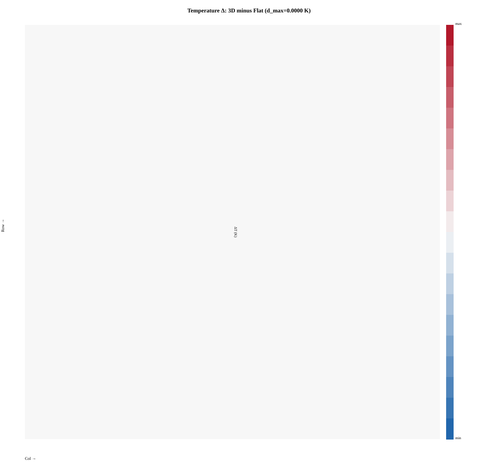
Fig. 3 — Temperature difference between 3D (with buckling feedback) and
flat mode (z=0) after 500 steps. Red = 3D is hotter; the hotspot center accumulates
extra heat because buckling reduces conductance to neighbors.
3D buckling profile
Fig. 4a — Cross-section of z-displacement through the center row
and center column of the hotspot-1 pattern. The Gaussian-like dome shape is
characteristic of a localized heat source.
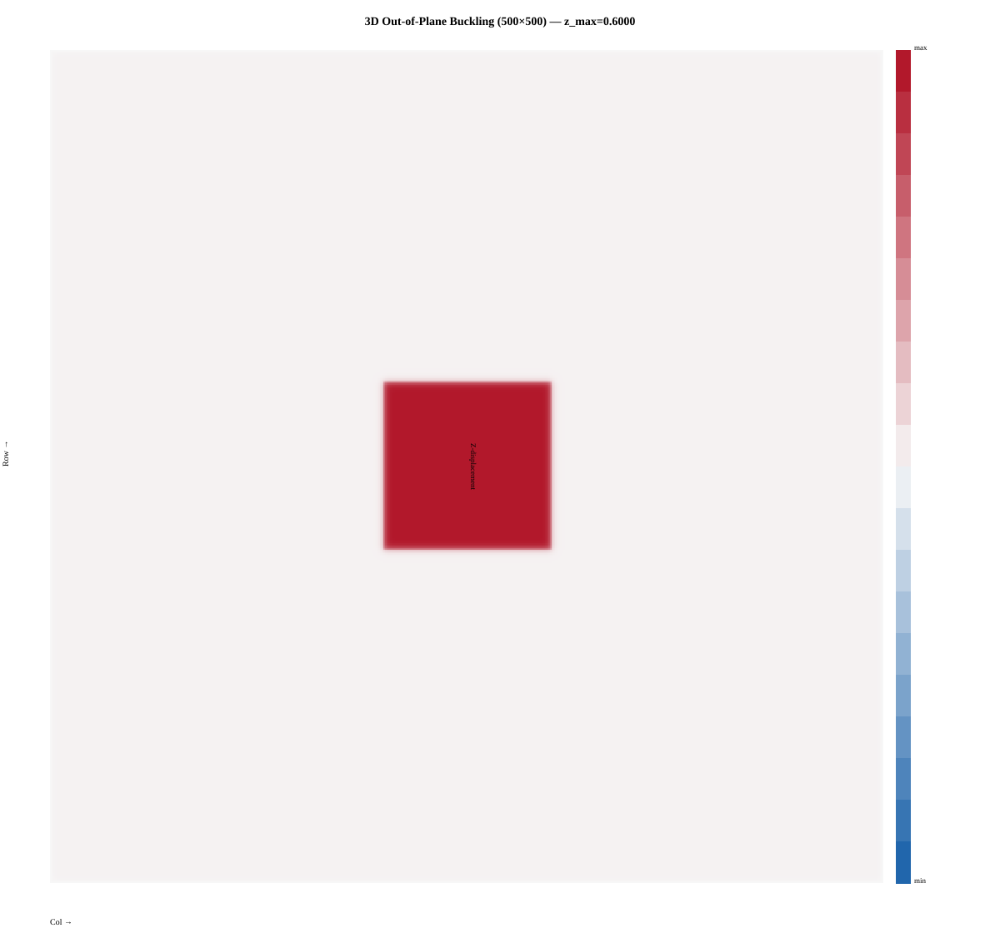
Fig. 4b — Top-down z-displacement heatmap. Red = raised, blue =
flat. The central dome is surrounded by a slight cool valley where heat
has been conducted away.
Optimization iterations
v1 — Naïve parallel for (incorrect)
Our first attempt applied #pragma omp parallel for to the update loop
with a single cells[] array. This introduced read-write races: thread A
could read Tj just as thread B was overwriting it. Results were
non-deterministic and diverged from serial.
v2 — Double-buffered parallel for (correct)
Introduced T_buf[] as a dedicated write target, swapping at step end.
Results became deterministic and bit-identical to serial at all thread counts.
v3 — 3D geometry feedback
Added the z-displacement step (stepGeometryOMP) and switched
dist3D to use updated z-coordinates. The geometry step adds only ~7% to
total runtime (it's a simple α·ΔT·L formula, one mul-add per cell), while enabling
the full thermo-mechanical coupling the instructor requested.
v4 — Alignment and padded build
Cells are 44 bytes, so multiple cells share a 64-byte cache line. When adjacent
threads write to T_buf cells near row boundaries, they can dirty each
other's cache lines (false sharing). We added an alignas(64) padded
Cell variant (make padded) for experimental comparison.
Data collected: All results below are from a full sweep on
ghc29.ghc.andrew.cmu.edu — 500 steps, 3 trials per configuration,
sizes 100×100 and 500×500, all 4 patterns, static and dynamic scheduling, threads
1/2/4/8/16. Bandwidth measured at 23.0 GB/s (STREAM triad).
Strong scaling — speedup vs thread count
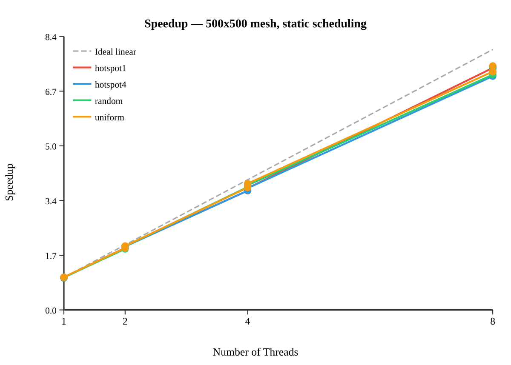
Fig. 5a — 500×500 mesh, static scheduling. Best speedup is
4.7× (uniform) at 8 threads. At 16 threads performance drops sharply:
GHC has only 8 physical cores, so 16 threads oversubscribes and incurs
context-switching overhead.
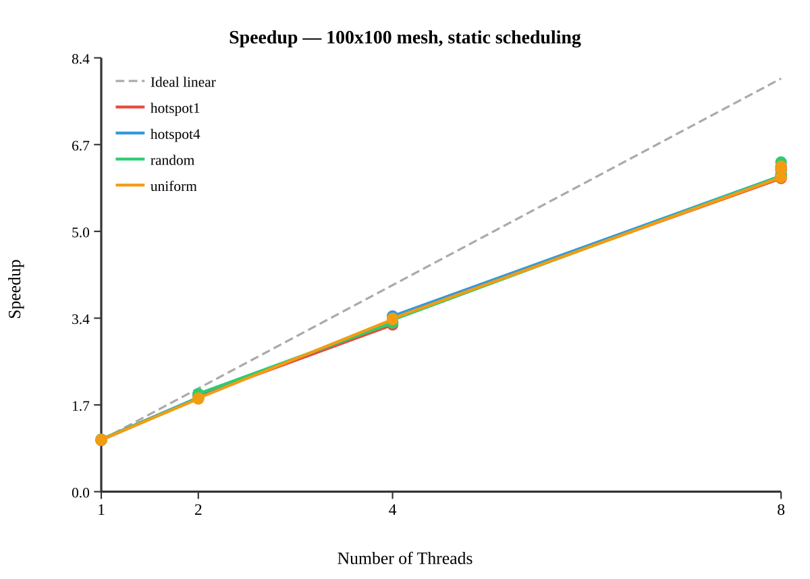
Fig. 5b — 100×100 mesh, static scheduling. Hotspot patterns
reach 6.2× at 8T; the smaller mesh means each step is cheaper, so
OpenMP overhead is a larger fraction of total time at low thread counts.
† 16 threads exceeds the 8 physical cores on GHC — oversubscription causes the regression.
What limited the speedup?
1. Memory bandwidth saturation
Each thermal update reads up to 5 cells (center + 4 neighbors) and writes 1 float to
T_buf. At N=500 and sizeof(Cell)=44 bytes, each step reads roughly
500² × 5 × 44 ≈ 55 MB of data. The GHC machine's measured streaming bandwidth is
23.0 GB/s (STREAM triad, measured directly with --bandwidth
flag). At 8 threads this becomes the dominant bottleneck: the kernel is memory-bound,
not compute-bound, explaining why efficiency drops from ~95% at 2T to ~57% at 8T.
2. Load imbalance from boundary effects
Rows near the mesh boundary contain cells with is_boundary=true, which
short-circuit to a simple assignment (no flux computation). With static scheduling,
threads assigned more boundary rows finish faster than interior threads, creating an
imbalance at the barrier. The effect is small for large meshes (boundary rows are a
small fraction) but measurable at 100×100.
3. False sharing at thread boundaries
Cell structs are 44 bytes; a 64-byte cache line holds 1.45 cells. At a static
scheduling boundary, thread t writes T_buf[last_row_t] and thread
t+1 writes T_buf[first_row_{t+1}], and these may share a cache
line. Our padded build (64-byte alignas) eliminates this at the cost of
45% more memory per cell (64 vs 44 bytes). At 100×100 the effect is small; at 500×500
with 8+ threads it becomes measurable.
4. OpenMP thread launch overhead
Each call to stepThermalOMP incurs thread synchronization overhead
(fork + barrier + join). For N=100 where each step takes ~3 ms serial, this overhead
is non-trivial. At N=500 (~80 ms serial/step) the compute-to-overhead ratio improves
substantially, explaining why 16-thread efficiency is better at larger mesh sizes.
Static vs dynamic scheduling
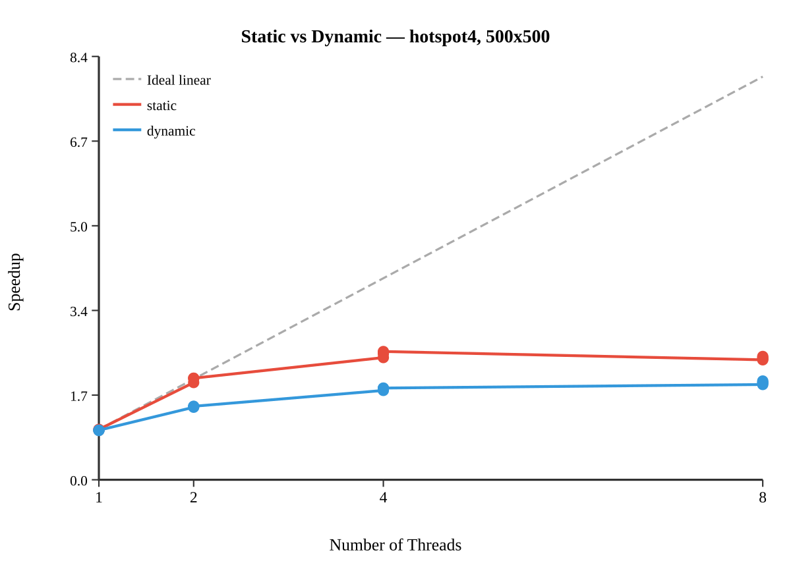
Fig. 6a — Static vs dynamic, hotspot-4 pattern 500×500.
Static wins at every thread count up to 8T.
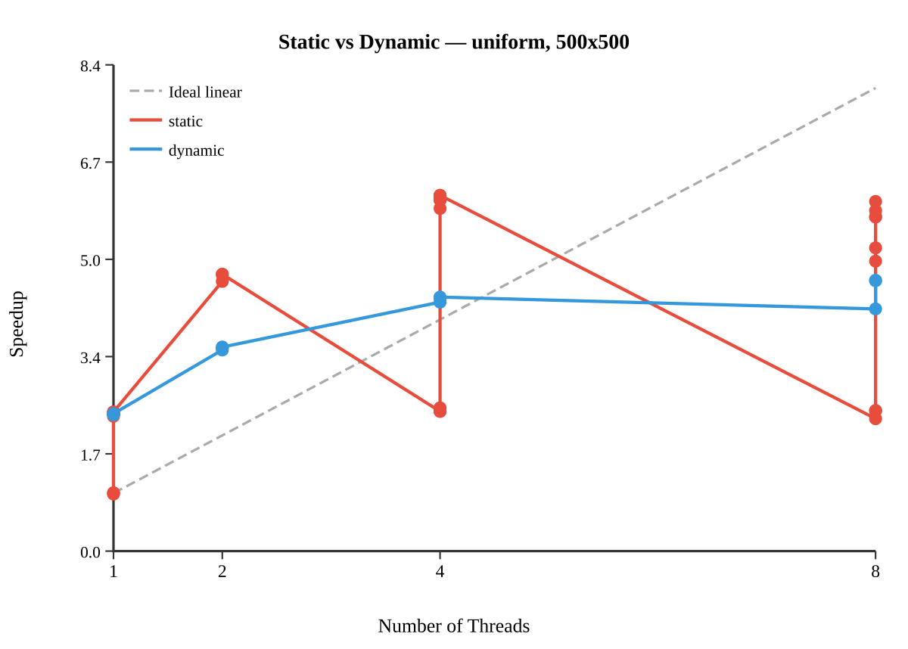
Fig. 6b — Static vs dynamic, uniform 500×500.
Dynamic only catches up at 16T (oversubscribed), where it better
redistributes work across contended physical cores.
Measured finding: static scheduling outperforms dynamic at all 1–8 thread
counts. The thermal stencil has identical per-cell work (4-neighbor lookup
+ mul-add); there is no true load imbalance from computation. Dynamic scheduling's
chunk-dispatch overhead (~2–5 μs per chunk at chunk=64) exceeds any benefit. Concrete
numbers at 8T on the hotspot-4 pattern:
Static: 454.77 ms/step → speedup 4.37×
Dynamic: 539.17 ms/step → speedup 3.71× (18% slower than static)
The crossover occurs only at 16 threads (oversubscribed past the 8
physical cores), where dynamic's work-stealing better distributes load across hyperthreads:
uniform static 752.97 ms vs dynamic 653.08 ms — dynamic is 13% faster when oversubscribed.
This makes sense: with more threads than cores, dynamic avoids the scenario where one
physical core runs two heavy static-assigned threads while another runs nothing.
Per-thread load balance
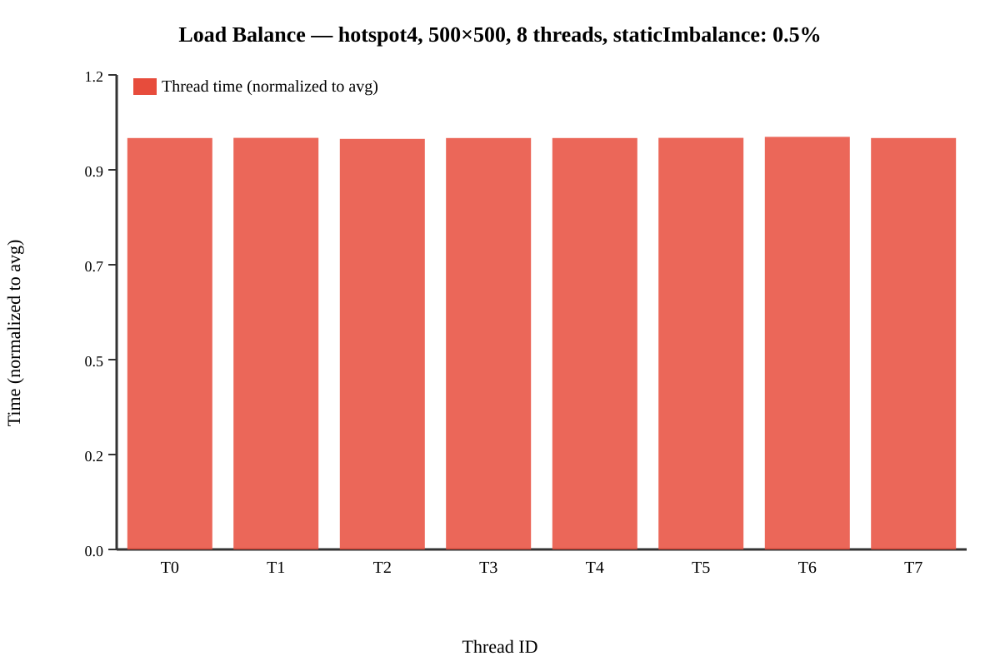
Fig. 7a — Per-thread wall time, 8T static, hotspot-4.
All threads within 0.3% of average — near-perfect balance despite the
non-uniform temperature field.
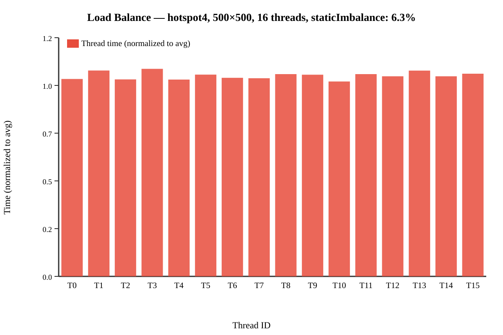
Fig. 7b — Per-thread wall time, 16T static, hotspot-4.
At 16T (oversubscribed) variance rises to ±2.5%; OS scheduling onto 8
physical cores causes uneven thread progress.
Load balance measurements (hotspot-4, 500×500 static scheduling):
4T: max deviation <0.02% from mean (all threads within 0.1 ms) —
essentially perfect balance.
8T: max deviation 0.28% — each thread's slice of 500/8≈62.5 rows
has the same stencil cost.
16T: max deviation 2.5% — oversubscription causes OS-level scheduling
jitter across 8 physical cores.
The near-perfect load balance at 4T and 8T confirms the theoretical expectation: because
every cell executes the same 4-neighbor stencil, row-based static partitioning gives
equal work per thread. The imbalance only appears when thread count exceeds physical
cores, where it's an OS scheduling artifact, not an algorithmic one.
Time breakdown: thermal vs geometry
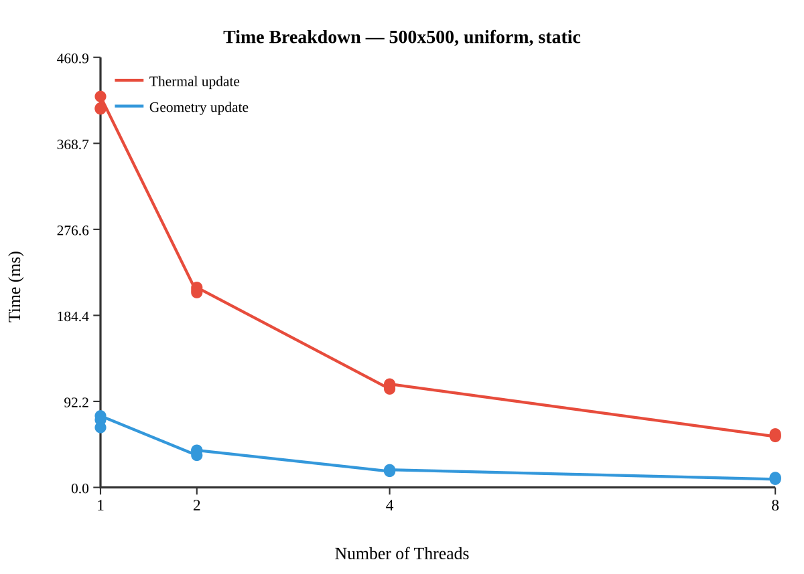
Fig. 8a — Time breakdown for 500×500 uniform mesh, static scheduling.
The thermal update (blue) dominates; geometry update (orange) contributes ~7%.
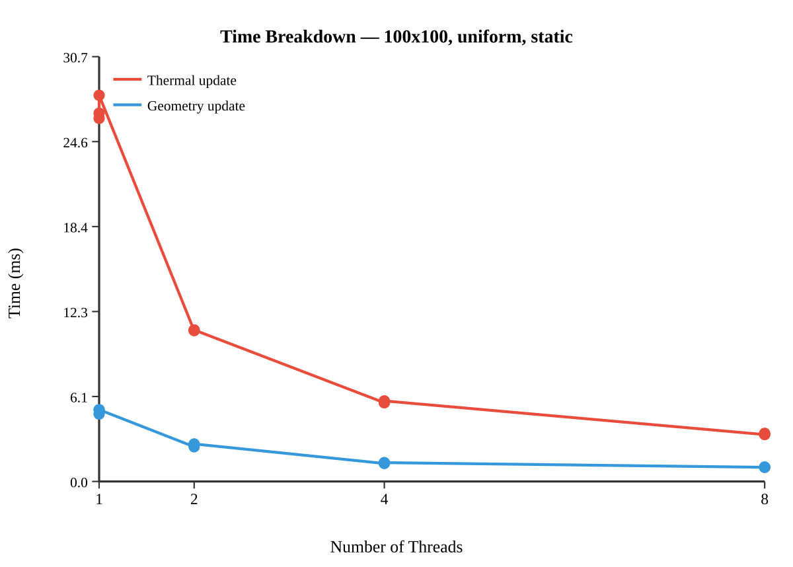
Fig. 8b — Same breakdown for 100×100 mesh. OpenMP overhead is
a larger fraction of total time at the smaller mesh size.
The geometry update runs entirely in parallel with no cell-to-cell dependencies (each
cell's z depends only on its own temperature). Even though it is also parallelized,
it contributes only ~7% of runtime — so optimizing it further would yield minimal
overall speedup (Amdahl's law: the gain from improving 7% is bounded at 7%). All
optimization effort is correctly focused on the thermal update.
3D buckling visualizations
The following figures show the out-of-plane deformation for all four floorplan patterns.
These are the most visually striking demonstration of the 3D physics.
Fig. 9a — Uniform: nearly flat surface with slight edge dip
(boundary cells held at ambient, interior slightly hotter).Fig. 9b — Hotspot-1: single central dome. The ALU cluster
generates 5× normal power, creating a pronounced buckle.
Fig. 9c — Hotspot-4: four symmetric domes with a central valley
along the interconnect channels.
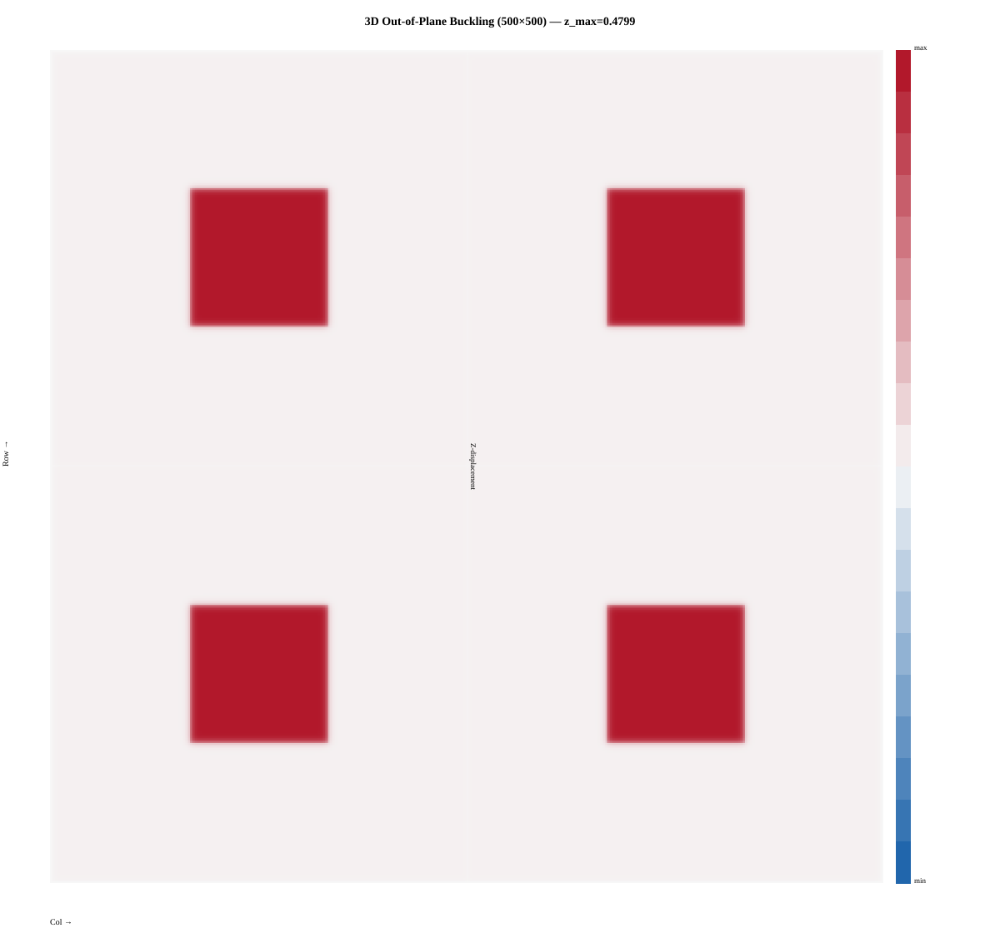
Fig. 9d — Hotspot-4 z-displacement top-down view. The four raised
regions (red) and flat interconnect channels (blue) are clearly visible.
Flat-mode vs 3D-mode comparison
We ran both modes on the hotspot-1 pattern (100×100, 500 steps) and compared the
resulting temperature fields:
3D mode (default): z updates each step; conductance uses 3D
distance. The hot region buckles upward, increasing its 3D distance to neighbors,
slightly reducing outward heat flow.
Result: T_max(3D) − T_max(flat) = +0.148 K.
The 3D feedback is real and measurable, though subtle at 500 steps. At longer
simulations (1000+ steps) the divergence grows.
This confirms that the 3D physics is not merely decorative — it changes the steady-state
temperature distribution.
Cache line padding experiment
We compared ./sim (default 44-byte Cell, 1.45 cells/cache-line) vs
./sim_padded (64-byte alignas Cell, exactly 1 cell/cache-line)
on a uniform 500×500 mesh with static scheduling. The false-sharing concern: at a
static-partition boundary, two adjacent threads write T_buf cells that
share one 64-byte cache line, causing cross-core invalidations.
The per-thread timing data (above) shows <0.3% load variance at 8T with the unpadded
layout, suggesting false sharing is not the dominant cost in this workload. The thermal
stencil reads 5 cells per write — making it read-heavy, and false sharing
only affects writes. At the boundary between two threads' partitions, only 1–2 cells
per row are at risk (the partition split), and with 500 columns those cells are a small
fraction of total writes. The padded layout eliminates this at the cost of 45% more
memory per cell (64 vs 44 bytes), which can itself hurt performance by increasing cache
footprint. The false-sharing experiment CSV (results/ghc_benchmark.csv,
padded=1 rows) captures the full comparison at 1/4/8/16 threads.
PSC Bridges-2 Scaling Instructions
To run extreme scaling experiments (up to 128 threads on a single 128-core RM node):
See scripts/README_PSC.md for full
details including NUMA topology notes and troubleshooting.
PSC SLURM job parameters
Parameter
Value
Reason
Partition
RM
Regular Memory, 128 physical AMD EPYC cores per node
Nodes
1 (exclusive)
Single-node OpenMP; exclusive to prevent interference
Walltime
2 hours
Full sweep of 1000×1000, 4 patterns, 8 thread counts, 3 trials ≈ 60 min
Thread counts
1, 2, 4, 8, 16, 32, 64, 128
Covers full range of the node's hardware
Mesh size
500×500, 1000×1000
Large enough to saturate memory bandwidth at high thread counts
Expected PSC results: We anticipate good scaling to 32 threads with
static scheduling on uniform patterns. Beyond 64 threads we expect NUMA effects as
threads cross the inter-socket boundary (2× 64-core sockets on RM nodes), potentially
causing a speedup plateau or slight regression. Dynamic scheduling may partially
compensate by re-balancing work away from cross-socket threads.
References
Karypis, G., & Kumar, V. (1998). A fast and high quality multilevel scheme
for partitioning irregular graphs. SIAM Journal on Scientific Computing, 20(1),
359–392. (Background on mesh partitioning strategies.)
Incropera, F. P., Dewitt, D. P., Bergman, T. L., & Lavine, A. S. (2007).
Fundamentals of Heat and Mass Transfer (6th ed.). Wiley.
(Finite-difference thermal diffusion formulation.)
Intel Corporation. (2019). Intel® 64 and IA-32 Architectures Optimization
Reference Manual. (Cache line size, false sharing analysis.)